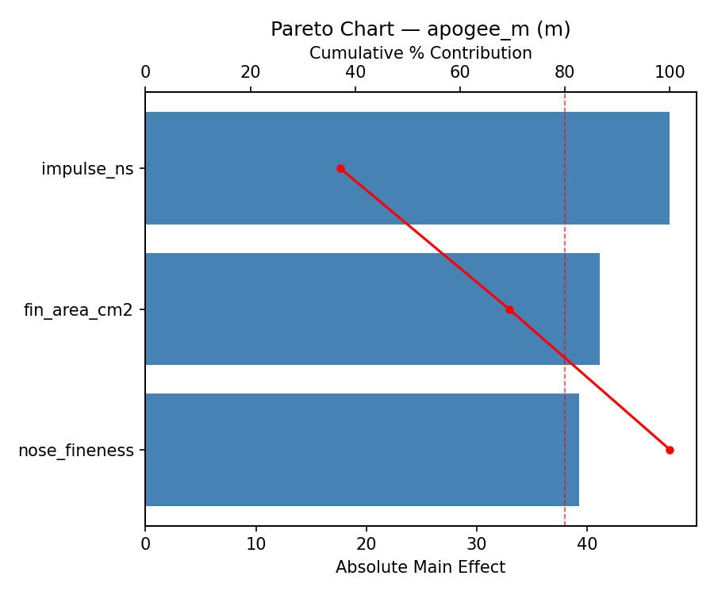
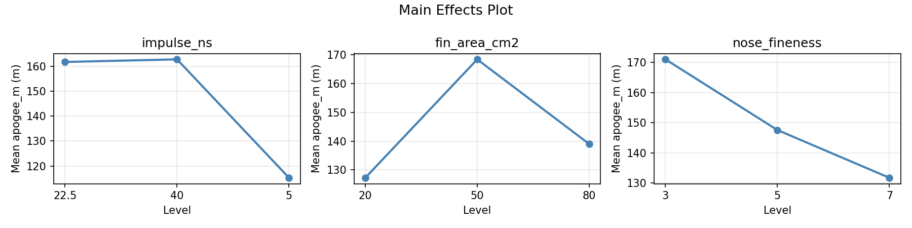
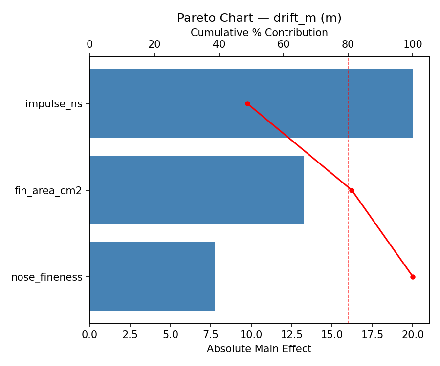
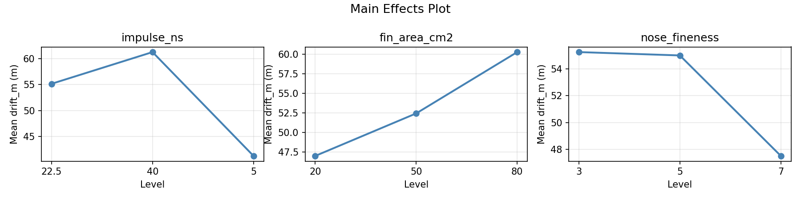
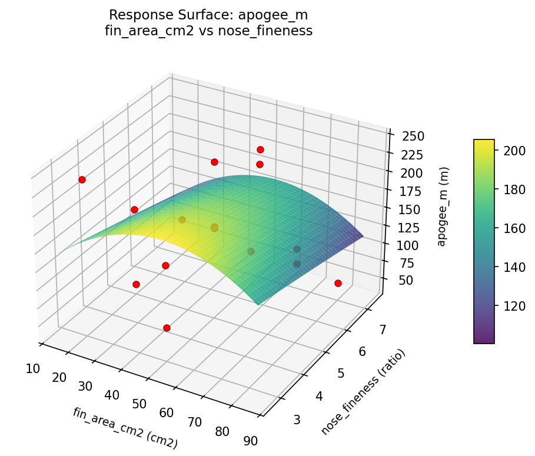
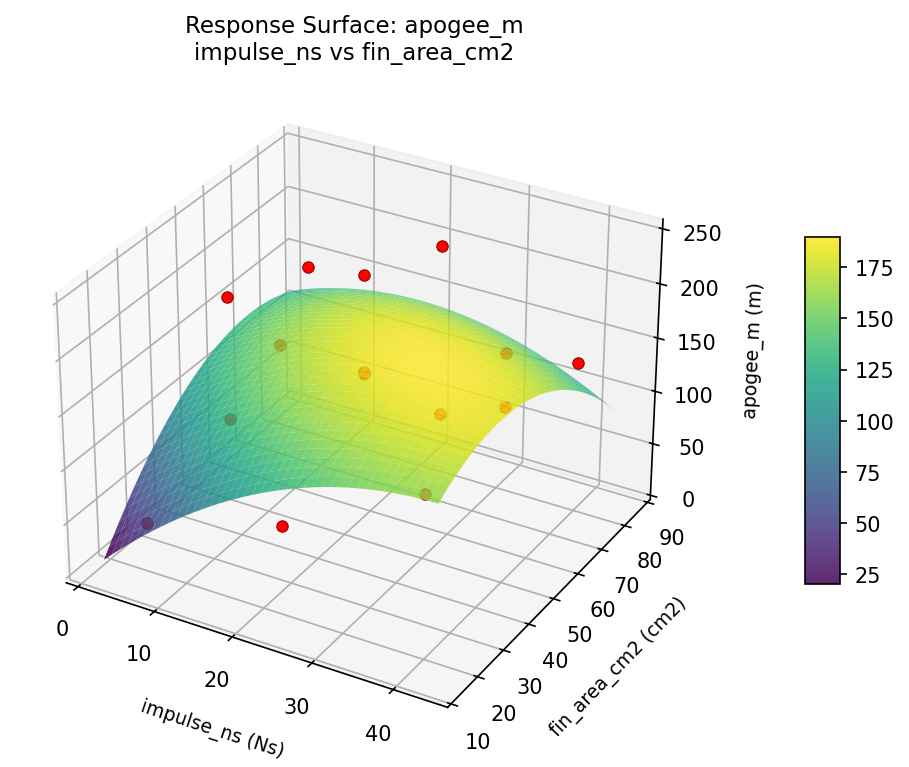
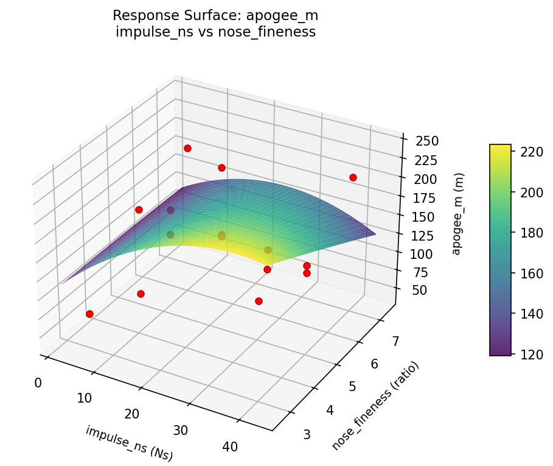
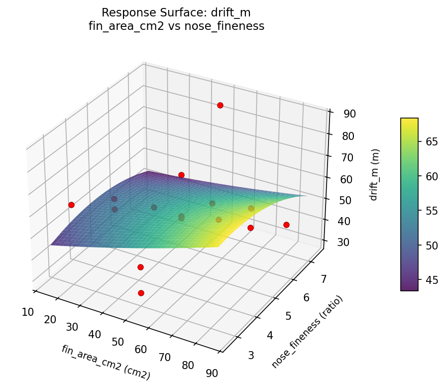
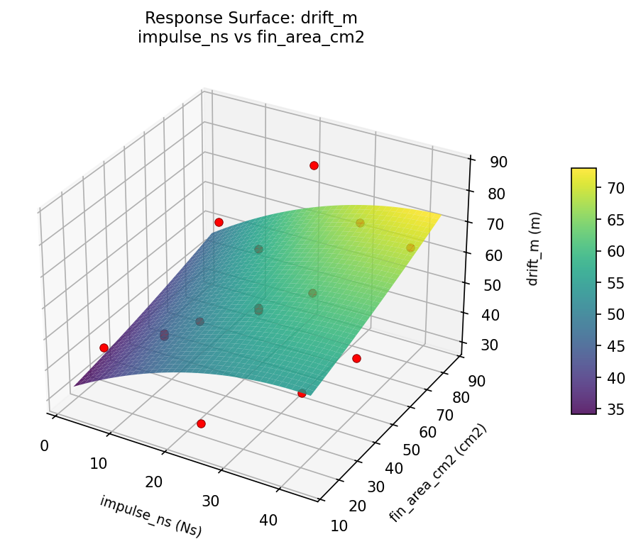
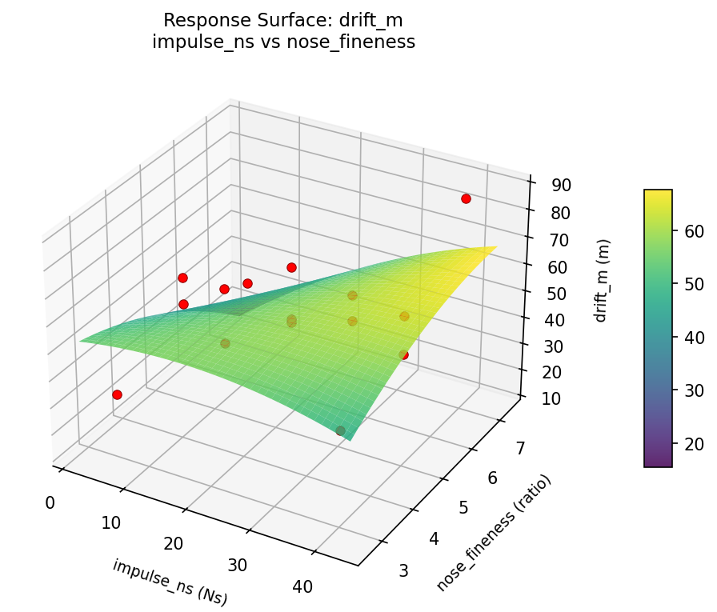

Summary
This experiment investigates model rocket flight optimization. Box-Behnken design to maximize apogee altitude and minimize drift by tuning motor impulse, fin area, and nose cone shape factor.
The design varies 3 factors: impulse ns (Ns), ranging from 5 to 40, fin area cm2 (cm2), ranging from 20 to 80, and nose fineness (ratio), ranging from 3 to 7. The goal is to optimize 2 responses: apogee m (m) (maximize) and drift m (m) (minimize). Fixed conditions held constant across all runs include body diam = 25mm, recovery = parachute.
A Box-Behnken design was chosen because it efficiently fits quadratic models with 3 continuous factors while avoiding extreme corner combinations — requiring only 15 runs instead of the 8 needed for a full factorial at two levels.
Quadratic response surface models were fitted to capture potential curvature and factor interactions. The RSM contour plots below visualize how pairs of factors jointly affect each response.
Key Findings
For apogee m, the most influential factors were impulse ns (37.1%), fin area cm2 (32.2%), nose fineness (30.7%). The best observed value was 242.0 (at impulse ns = 40, fin area cm2 = 80, nose fineness = 5).
For drift m, the most influential factors were impulse ns (48.8%), fin area cm2 (32.3%), nose fineness (18.9%). The best observed value was 30.0 (at impulse ns = 5, fin area cm2 = 50, nose fineness = 7).
Recommended Next Steps
- Run confirmation experiments at the predicted optimal settings to validate the model.
- Consider whether any fixed factors should be varied in a future study.
Experimental Setup
Factors
| Factor | Low | High | Unit |
|---|
impulse_ns | 5 | 40 | Ns |
fin_area_cm2 | 20 | 80 | cm2 |
nose_fineness | 3 | 7 | ratio |
Fixed: body_diam = 25mm, recovery = parachute
Responses
| Response | Direction | Unit |
|---|
apogee_m | ↑ maximize | m |
drift_m | ↓ minimize | m |
Configuration
{
"metadata": {
"name": "Model Rocket Flight Optimization",
"description": "Box-Behnken design to maximize apogee altitude and minimize drift by tuning motor impulse, fin area, and nose cone shape factor"
},
"factors": [
{
"name": "impulse_ns",
"levels": [
"5",
"40"
],
"type": "continuous",
"unit": "Ns"
},
{
"name": "fin_area_cm2",
"levels": [
"20",
"80"
],
"type": "continuous",
"unit": "cm2"
},
{
"name": "nose_fineness",
"levels": [
"3",
"7"
],
"type": "continuous",
"unit": "ratio"
}
],
"fixed_factors": {
"body_diam": "25mm",
"recovery": "parachute"
},
"responses": [
{
"name": "apogee_m",
"optimize": "maximize",
"unit": "m"
},
{
"name": "drift_m",
"optimize": "minimize",
"unit": "m"
}
],
"settings": {
"operation": "box_behnken",
"test_script": "use_cases/261_model_rocket_flight/sim.sh"
}
}
Experimental Matrix
The Box-Behnken Design produces 15 runs. Each row is one experiment with specific factor settings.
| Run | impulse_ns | fin_area_cm2 | nose_fineness |
|---|
| 1 | 22.5 | 20 | 3 |
| 2 | 22.5 | 50 | 5 |
| 3 | 40 | 50 | 7 |
| 4 | 40 | 50 | 3 |
| 5 | 22.5 | 50 | 5 |
| 6 | 22.5 | 50 | 5 |
| 7 | 5 | 50 | 7 |
| 8 | 40 | 20 | 5 |
| 9 | 22.5 | 20 | 7 |
| 10 | 40 | 80 | 5 |
| 11 | 5 | 50 | 3 |
| 12 | 22.5 | 80 | 7 |
| 13 | 5 | 20 | 5 |
| 14 | 5 | 80 | 5 |
| 15 | 22.5 | 80 | 3 |
Step-by-Step Workflow
1
Preview the design
$ python doe.py info --config use_cases/261_model_rocket_flight/config.json
2
Generate the runner script
$ python doe.py generate --config use_cases/261_model_rocket_flight/config.json \
--output use_cases/261_model_rocket_flight/results/run.sh --seed 42
3
Execute the experiments
$ bash use_cases/261_model_rocket_flight/results/run.sh
4
Analyze results
$ python doe.py analyze --config use_cases/261_model_rocket_flight/config.json
5
Get optimization recommendations
$ python doe.py optimize --config use_cases/261_model_rocket_flight/config.json
ℹ
Multi-Objective Optimization
This experiment has conflicting objectives (apogee_m (↑), drift_m (↓)). Use --multi to find the best compromise using desirability functions:
$ python doe.py optimize --config use_cases/261_model_rocket_flight/config.json --multi
6
Generate the HTML report
$ python doe.py report --config use_cases/261_model_rocket_flight/config.json \
--output use_cases/261_model_rocket_flight/results/report.html
Real-World Experiment Workflow
ℹ
Physical Aerospace Test? Use the Manual Workflow
Flight and aerospace experiments involve real aerodynamics, propulsion, and atmospheric conditions requiring physical testing. The simulation script above is for demonstration. For your real experiments, use record, status, and export-worksheet.
$ python doe.py export-worksheet --config use_cases/261_model_rocket_flight/config.json \
--format csv --output worksheet.csv
$ python doe.py status --config use_cases/261_model_rocket_flight/config.json
$ python doe.py record --config use_cases/261_model_rocket_flight/config.json --run 1
$ python doe.py analyze --config use_cases/261_model_rocket_flight/config.json --partial
$ python doe.py analyze --config use_cases/261_model_rocket_flight/config.json
$ python doe.py optimize --config use_cases/261_model_rocket_flight/config.json
$ python doe.py report --config use_cases/261_model_rocket_flight/config.json \
--output report.html
✔
Works Without a Test Script
The analysis pipeline doesn't care how results were produced. Record your measurements with record, and the full analysis, optimization, and reporting pipeline works identically. Use --partial to get early insights before all runs are complete.
Features Exercised
| Feature | Value |
|---|
| Design type | box_behnken |
| Factor types | continuous (all 3) |
| Arg style | double-dash |
| Responses | 2 (apogee_m ↑, drift_m ↓) |
| Total runs | 15 |
Analysis Results
Generated from actual experiment runs using the DOE Helper Tool.
Response: apogee_m
Top factors: impulse_ns (37.1%), fin_area_cm2 (32.2%), nose_fineness (30.7%).
Pareto Chart

Main Effects Plot

Response: drift_m
Top factors: impulse_ns (48.8%), fin_area_cm2 (32.3%), nose_fineness (18.9%).
Pareto Chart

Main Effects Plot

Response Surface Plots
3D surfaces fitted with quadratic RSM. Red dots are observed data points.
apogee m fin area cm2 vs nose fineness

apogee m impulse ns vs fin area cm2

apogee m impulse ns vs nose fineness

drift m fin area cm2 vs nose fineness

drift m impulse ns vs fin area cm2

drift m impulse ns vs nose fineness

Full Analysis Output
RSM surface: rsm_apogee_m_impulse_ns_vs_fin_area_cm2.png
RSM surface: rsm_apogee_m_impulse_ns_vs_nose_fineness.png
RSM surface: rsm_apogee_m_fin_area_cm2_vs_nose_fineness.png
RSM surface: rsm_drift_m_impulse_ns_vs_fin_area_cm2.png
RSM surface: rsm_drift_m_impulse_ns_vs_nose_fineness.png
RSM surface: rsm_drift_m_fin_area_cm2_vs_nose_fineness.png
=== Main Effects: apogee_m ===
Factor Effect Std Error % Contribution
--------------------------------------------------------------
impulse_ns 47.5000 16.5584 37.1%
fin_area_cm2 41.1786 16.5584 32.2%
nose_fineness 39.2500 16.5584 30.7%
=== Summary Statistics: apogee_m ===
impulse_ns:
Level N Mean Std Min Max
------------------------------------------------------------
22.5 7 161.7143 75.3474 52.0000 242.0000
40 4 162.7500 31.4788 137.0000 208.0000
5 4 115.2500 68.5632 42.0000 188.0000
fin_area_cm2:
Level N Mean Std Min Max
------------------------------------------------------------
20 4 127.2500 87.4162 42.0000 241.0000
50 7 168.4286 52.8925 74.0000 242.0000
80 4 139.0000 65.6709 52.0000 210.0000
nose_fineness:
Level N Mean Std Min Max
------------------------------------------------------------
3 4 171.0000 72.9703 74.0000 241.0000
5 7 147.5714 58.2347 42.0000 242.0000
7 4 131.7500 77.7190 52.0000 208.0000
=== Main Effects: drift_m ===
Factor Effect Std Error % Contribution
--------------------------------------------------------------
impulse_ns 20.0000 4.4811 48.8%
fin_area_cm2 13.2500 4.4811 32.3%
nose_fineness 7.7500 4.4811 18.9%
=== Summary Statistics: drift_m ===
impulse_ns:
Level N Mean Std Min Max
------------------------------------------------------------
22.5 7 55.1429 17.8366 30.0000 82.0000
40 4 61.2500 19.1028 44.0000 87.0000
5 4 41.2500 10.9049 32.0000 55.0000
fin_area_cm2:
Level N Mean Std Min Max
------------------------------------------------------------
20 4 47.0000 13.6382 30.0000 63.0000
50 7 52.4286 19.9069 32.0000 87.0000
80 4 60.2500 17.5570 40.0000 82.0000
nose_fineness:
Level N Mean Std Min Max
------------------------------------------------------------
3 4 55.2500 21.9298 32.0000 82.0000
5 7 55.0000 8.8694 45.0000 70.0000
7 4 47.5000 26.6646 30.0000 87.0000
Pareto chart (apogee_m): use_cases/261_model_rocket_flight/results/analysis/pareto_apogee_m.png
Pareto chart (drift_m): use_cases/261_model_rocket_flight/results/analysis/pareto_drift_m.png
Main effects (apogee_m): use_cases/261_model_rocket_flight/results/analysis/main_effects_apogee_m.png
Main effects (drift_m): use_cases/261_model_rocket_flight/results/analysis/main_effects_drift_m.png
Optimization Recommendations
=== Optimization: apogee_m ===
Direction: maximize
Best observed run: #3
impulse_ns = 40
fin_area_cm2 = 80
nose_fineness = 5
Value: 242.0
RSM Model (linear, R² = 0.0951, Adj R² = -0.1517):
Coefficients:
intercept +149.6000
impulse_ns +24.6250
fin_area_cm2 +5.3750
nose_fineness +7.0000
RSM Model (quadratic, R² = 0.6130, Adj R² = -0.0837):
Coefficients:
intercept +168.0000
impulse_ns +24.6250
fin_area_cm2 +5.3750
nose_fineness +7.0000
impulse_ns*fin_area_cm2 -8.5000
impulse_ns*nose_fineness +24.2500
fin_area_cm2*nose_fineness -22.7500
impulse_ns^2 +5.2500
fin_area_cm2^2 +32.7500
nose_fineness^2 -72.5000
Curvature analysis:
nose_fineness coef=-72.5000 concave (has a maximum)
fin_area_cm2 coef=+32.7500 convex (has a minimum)
impulse_ns coef=+5.2500 convex (has a minimum)
Notable interactions:
impulse_ns*nose_fineness coef=+24.2500 (synergistic)
fin_area_cm2*nose_fineness coef=-22.7500 (antagonistic)
impulse_ns*fin_area_cm2 coef=-8.5000 (antagonistic)
Predicted optimum (from quadratic model):
impulse_ns = 40
fin_area_cm2 = 20
nose_fineness = 5
Predicted value: 233.7500
Model quality: Moderate fit — use predictions directionally, not precisely.
Factor importance:
1. nose_fineness (effect: 82.2, contribution: 47.1%)
2. impulse_ns (effect: 49.2, contribution: 28.2%)
3. fin_area_cm2 (effect: 42.9, contribution: 24.6%)
=== Optimization: drift_m ===
Direction: minimize
Best observed run: #13
impulse_ns = 5
fin_area_cm2 = 50
nose_fineness = 7
Value: 30.0
RSM Model (linear, R² = 0.1307, Adj R² = -0.1064):
Coefficients:
intercept +53.0667
impulse_ns +4.1250
fin_area_cm2 +5.6250
nose_fineness +4.5000
RSM Model (quadratic, R² = 0.6800, Adj R² = 0.1041):
Coefficients:
intercept +67.0000
impulse_ns +4.1250
fin_area_cm2 +5.6250
nose_fineness +4.5000
impulse_ns*fin_area_cm2 +6.2500
impulse_ns*nose_fineness +17.5000
fin_area_cm2*nose_fineness -4.0000
impulse_ns^2 -5.1250
fin_area_cm2^2 -7.6250
nose_fineness^2 -13.3750
Curvature analysis:
nose_fineness coef=-13.3750 concave (has a maximum)
fin_area_cm2 coef=-7.6250 concave (has a maximum)
impulse_ns coef=-5.1250 concave (has a maximum)
Notable interactions:
impulse_ns*nose_fineness coef=+17.5000 (synergistic)
impulse_ns*fin_area_cm2 coef=+6.2500 (synergistic)
fin_area_cm2*nose_fineness coef=-4.0000 (antagonistic)
Predicted optimum (from quadratic model):
impulse_ns = 40
fin_area_cm2 = 50
nose_fineness = 7
Predicted value: 74.6250
Model quality: Moderate fit — use predictions directionally, not precisely.
Factor importance:
1. nose_fineness (effect: 17.0, contribution: 45.7%)
2. fin_area_cm2 (effect: 11.9, contribution: 32.1%)
3. impulse_ns (effect: 8.2, contribution: 22.2%)